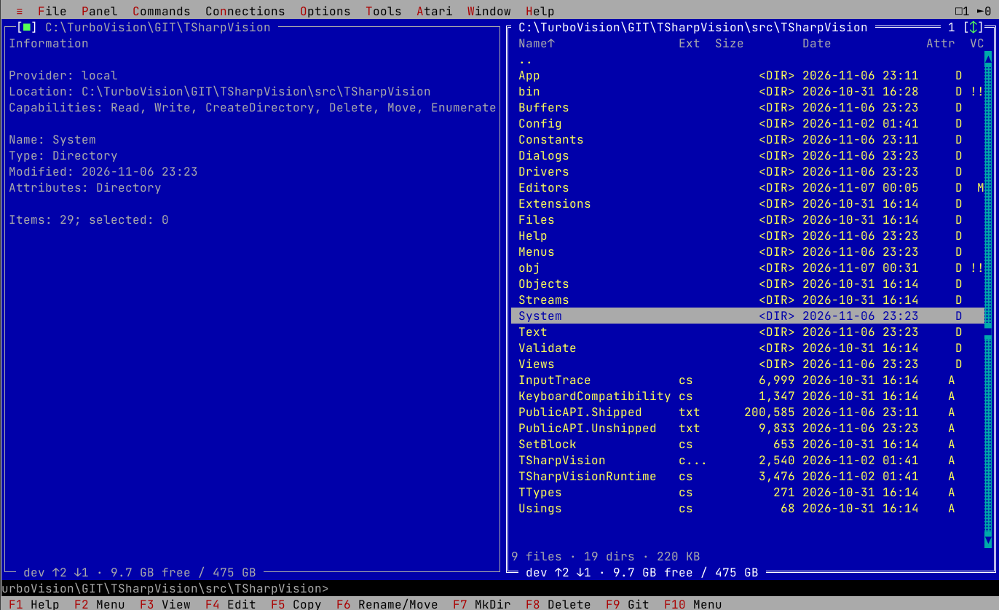

Released · 1.2.0Open source / MIT
TSharpVision
Rich text-mode interfaces.
Modern C# and .NET.
An actively maintained UI framework for .NET 10. Build one application for a Windows console, a Linux or macOS terminal, or an SDL desktop window.
- Windows, dialogs and composable controls
- Keyboard-first interaction and host-dependent mouse support
- Code editor, hex, table and terminal extensions
- Headless driver for testing and tooling

